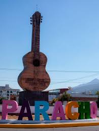

Las "7 maravillas" de Michoacán se refieren a los siguientes atractivos: la Catedral de Morelia, la Isla Janitzio, el Lago de Pátzcuaro, el Parque Nacional Barranca del Cupatitzio, la Reserva de la Biosfera Mariposa Monarca, la Sierra Madre del Sur y el Volcán Paricutín. Estos lugares destacan por su belleza natural, historia y cultura, siendo puntos clave en la oferta turística de Michoacán.


|

|